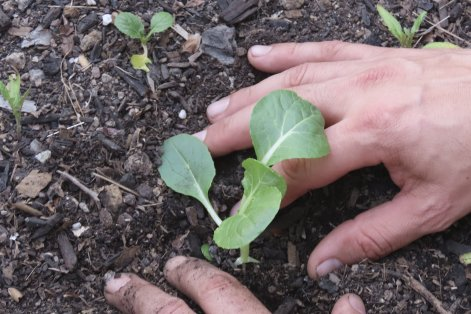

SOSTENIBILIDAD • DISEÑO ECOLÓGICO • REGENERACIÓN
Diseñamos sistemas regenerativos
Diseñamos sistemas regenerativos
para espacios, organizaciones y proyectos con impacto
Consultora boutique en diseño regenerativo, sistemas de medición de impacto y plataformas digitales para sostenibilidad.